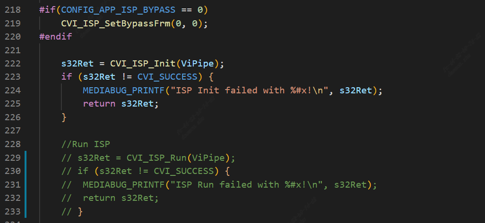
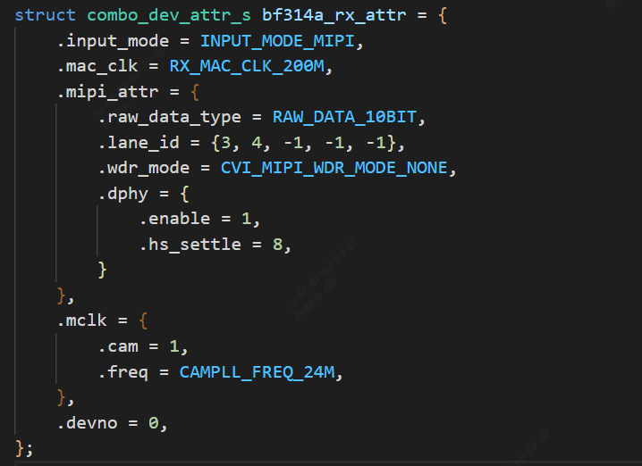
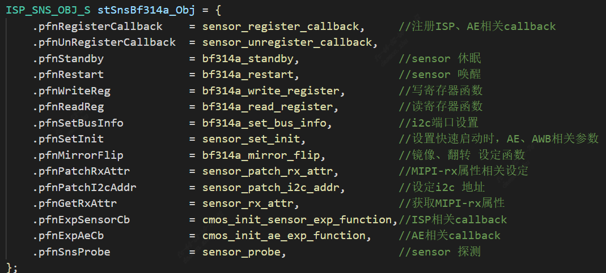
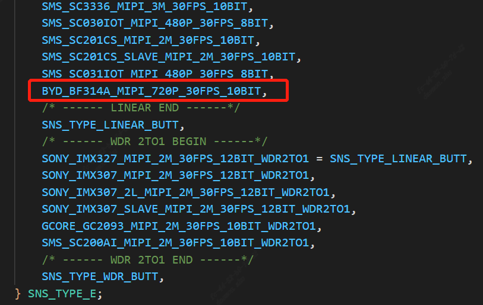
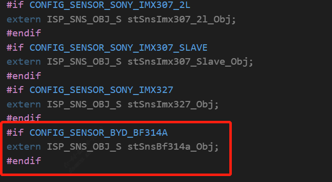
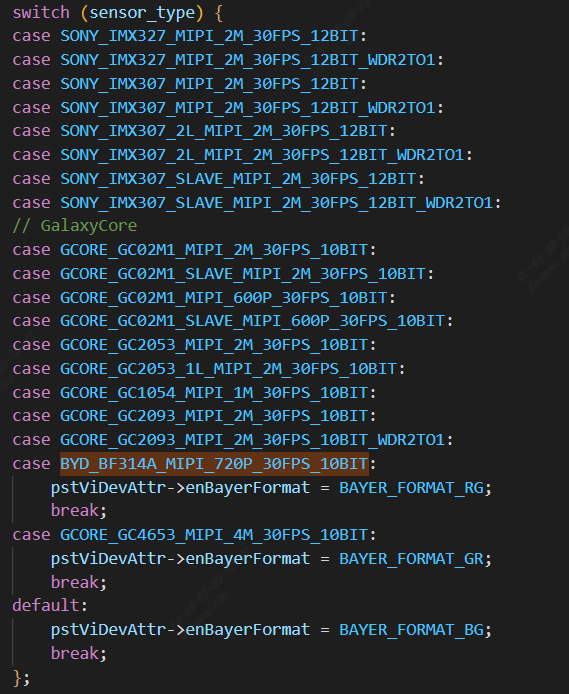
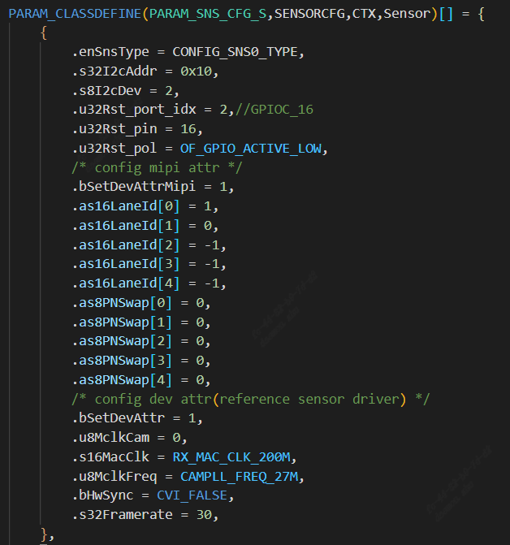
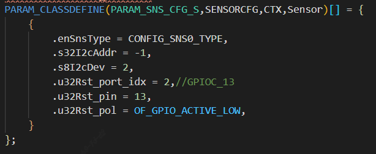
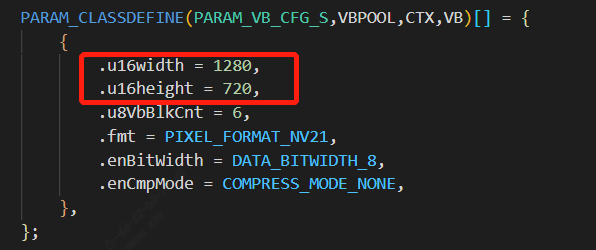

5. Image Output Debugging(Aliosthe corresponding content)¶
5.1. Hardwarethe corresponding content¶
verifySensorthe corresponding content.
verifySensor Reset GPIOthe corresponding content.
verifySensorInputthe corresponding content(the corresponding contentProcessorthe corresponding content)
verifyI2Cthe corresponding contentSensorthe corresponding content.
the corresponding contentcallFile Systemthe corresponding contentdefaultthe corresponding contentiic read /iic writeCommandVerification.
5.2. ConfigurationInitializethe corresponding content¶
ConfigurationInitializethe corresponding contentrecommendthe corresponding contentVersionreleasethe corresponding contentsensorDriver。
the corresponding contentsensor bringuprecommendthe corresponding contentAEthe corresponding contentRelatedthe corresponding contentcallbacksthe corresponding content。
modifycomponents/cvi_platform/media/src/media_video.c，the corresponding contentCVI_ISP_Runcall。
{kind=link}

modifyxxx_cmos_ctrl.cthe corresponding contentinitfunction，the corresponding contentxxx_default_reg_initcall。

the corresponding contentsensorAdaptationthe corresponding contentdisplaythe corresponding contentImagethe corresponding content，the corresponding contentOpenthe corresponding content。
5.2.1. the corresponding contentSensorDriver¶
the corresponding contentSensorthe corresponding content、the corresponding contentResolutionthe corresponding contentWDRmodeselectreleasethe corresponding contentsensorDriverthe corresponding contentmodifythe corresponding contentsensorthe corresponding content。
the corresponding contentmars_alios/components/cvi_mmf_sdk/cvi_sensor/xxxxthe corresponding contentxxxx_cmos.c、xxxx_cmos_ex.h、xxxx_cmos_param.hthe corresponding contentxxxx_sensor_ctl.c
modifyxxxx_sensor_ctl.cthe corresponding contentI2C Configurationthe corresponding contenti2c_addr, addr_bytethe corresponding contentdata_byte
const CVI_U8 bf314a_i2c_addr = 0x6e;
const CVI_U32 bf314a_addr_byte = 1;
const CVI_U32 bf314a_data_byte = 1;
the corresponding contentsensorInterfacethe corresponding content, modifyxxxx_cmos_param.hthe corresponding contentxxxx_rx_attrthe corresponding contentpfnGetRxAttr, Setmipi-rxthe corresponding content。
{kind=link}

.Input_mode:SetInputmodeYesmipithe corresponding contentYesbt656the corresponding content。
.Mac_clk: macthe corresponding contentFrequency
.raw_date_type:datathe corresponding content
.lane id:mipiDatalane、the corresponding contentlanethe corresponding contentIDConfiguration
.cam: mclk ID
.freq: SOCthe corresponding contentsensorthe corresponding contentInputthe corresponding content
.devno:mipirxthe corresponding contentNumber，sensor ID
the corresponding contentsensorOutputmode, modifyxxxx_cmos_param.hthe corresponding contentg_astxxx_mode.
static const BF314A_MODE_S g_astBf314a_mode[BF314A_MODE_NUM] = {
[BF314A_MODE_1280X720P30] = {
.name = "1280X720P30",
.astImg[0] = {
.stSnsSize = {
.u32Width = 1288,
.u32Height = 728,
},
.stWndRect = {
.s32X = 4,
.s32Y = 4,
.u32Width = 1280,
.u32Height = 720,
},
.stMaxSize = {
.u32Width = 1288,
.u32Height = 728,
},
},
.f32MaxFps = 30,
.f32MinFps = 0.34, /* vts * 30 / 0xFFFF */
.u32HtsDef = 1600,
.u32VtsDef = 750,
.stExp[0] = {
.u16Min = 1,
.u16Max = 750,
.u16Def = 450,
.u16Step = 1,
},
.stAgain[0] = {
.u32Min = 1024,
.u32Max = 16384,
.u32Def = 1024,
.u32Step = 1,
},
.stDgain[0] = {
.u32Min = 1024,
.u32Max = 16384,
.u32Def = 1024,
.u32Step = 1,
},
},
};
modifypfn_cmos_set_image_mode, the corresponding contentFramethe corresponding contentsensormode.
the corresponding contentinit sequencethe corresponding contentOutputmodethe corresponding contentYesthe corresponding contentResolution，the corresponding contentYesall pixel scanmode。
the corresponding contentneedthe corresponding contentsensorthe corresponding contentdatathe corresponding content，the corresponding contentneedAdaptationthe corresponding contentwindow crop mode，
the corresponding contentsensorthe corresponding contentcrop modethe corresponding contentinit sequence，orthe corresponding contentsensor specthe corresponding contentmodify。
5.2.2. SensorInitializethe corresponding content¶
the corresponding contentxxxx_sensor_ctrl.cthe corresponding contentsensormodethe corresponding contentpfn_cmos_sensor_init.
the corresponding contentxxxx_sensor_ctrl.c the corresponding contentxxxx_default_reg_initthe corresponding content.
the corresponding contentsensor object
{kind=link}

5.2.3. modifypackage.yamlthe corresponding contentFile¶
modifycvi_alios/components/cvi_mmf_sdk/cvi_sensor/package.yaml，the corresponding contentFilethe corresponding contentFile

5.3. Adaptationsolution¶
5.3.1. increasesensor type¶
build/media/cvi_sensor/sensor_cfg/sensor_cfg.hthe corresponding content_SNS_TYPE_Eincreasethe corresponding contenttype
{kind=link}

build/media/cvi_sensor/sensor_cfg/sensor_cfg.c
increasesensor object，the corresponding contentgetPicSize，getDevAttrfunctionthe corresponding contentcase
{kind=link}



{kind=link}

5.3.2. modifysensor mipiRelatedConfiguration¶
solutions/peripherals_test/customization/peripherals_qfn/param/custom_viparam.c
the corresponding contentConfigurationthe corresponding contentresetPins，mipi lanethe corresponding contentConfigurationthe corresponding contentsensor driverdefaultthe corresponding contentinformation
ConfigurationDescription：
s32I2cAddr：sensorthe corresponding contenti2c DeviceAddress
s8I2cDev:Tablethe corresponding contentI2Cportthe corresponding content
u32Rst_port_idx: resetPinsthe corresponding contentGPIO group
u32Rst_pin: resetPinsthe corresponding contentGPIO num
as16LaneId:Tablethe corresponding contentmipithe corresponding contentConfiguration
as8PNSwap:Tablethe corresponding contentP/Nthe corresponding content，the corresponding contentneedthe corresponding content0，needthe corresponding contentConfigurationthe corresponding content1
u8MclkCam:Tablethe corresponding contentmclkthe corresponding content
s16MacClk: mac clk
u8MclkFreq： MCLK Frequency
bHwSync：dual sensorFramethe corresponding content，bHwSync =1Tablethe corresponding contentslave sensor sync with master sensor
s32Framerate：Framethe corresponding content
{kind=link}

ifthe corresponding contentdefaultuseDriverthe corresponding contentParameter，the corresponding contentcanthe corresponding contentConfigurationthe corresponding contentFigurethe corresponding content
{kind=link}

5.3.3. modifyVB Configuration¶
solutions/peripherals_test/customization/peripherals_qfn/param/custom_sysparam.c the corresponding contentsensorOutputsizemodifyVBthe corresponding contentu16widththe corresponding contentu16height
{kind=link}

5.3.4. modifythe corresponding contentpinmux¶
solutions/peripherals_test/customization/peripherals_qfn/src/custom_platform.c the corresponding contentHardwareConfiguration，modifymipi i2c resetthe corresponding contentPinsthe corresponding content

5.3.5. modifythe corresponding contentConfiguration¶
solutions/peripherals_test/package.yaml.peripherals_qfn

5.4. Runsensor¶
the corresponding contentRunthe corresponding content，the corresponding contentstartsensor，the corresponding contentalios Serial PortInput proc/vi_dbg viewvi_dbginformation，Framethe corresponding contentdisplaynormalthe corresponding contentTablethe corresponding contentsensorthe corresponding contentnormalthe corresponding contentFigure